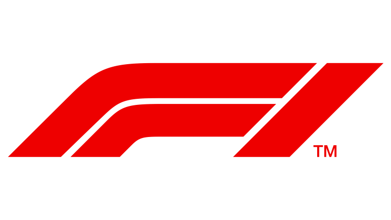
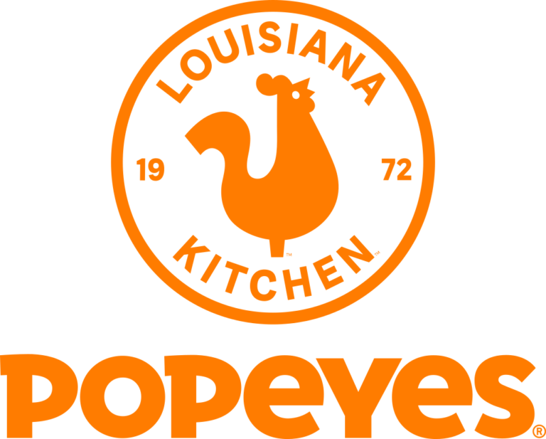

I'm a budding entrepreneur searching for my passion project.
In my free time, I'm discovering new hip-hop 🎶, reading 📚, keeping up on the latest  gossip, and bootstrapping my way through coding courses 👨💻.
I'm currently at  working on
tech products to improve operational efficiency. Feel free to reach out at